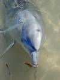
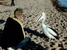
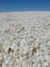
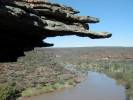
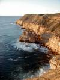

June
- 2nd
- 3rd
- 4th
- 5th
- 6th
- 7th
- 8th
- 9th
- 10th
- 11th
- 12th
- 13th
- 14th
- 15th
- 16th
- 17th
- 18th
- 19th
- 20th
- 21st
- 22nd
- 23rd
- 24th
- 25th
- 26th
- 27th
- 28th
- 29th
- 30th
July
- 1st
- 2nd
- 3rd
- 4th
- 5th
- 6th
- 7th
- 8th
- 9th
- 10th
- 11th
- 12th
- 13th
- 14th
- 15th
- 16th
- 17th
- 18th
- 19th
- 20th
- 21st
- 22nd
- 23rd
- 24th
- 25th
- 26th
- 27th
- 28th
- 29th
- 30th
- 31st
August

{kind=link}
Once upon a time (in the 60's) this was a relatively unknown place where hippies went to be close to nature and swim with the dolphins. Now it's a tourist

{kind=link}
However, it is still a nice place. Last year we went on a sailing trip with the catamaran "Shotover" to see dolphins, dugongs, and the sunset. That was excellent. Don't go snorkeling or rent a glass bottom boat, even though it is close to the Ningaloo Reef, there is nothing but sand and stones and seaweed here.
The pelicans are also quite interesting. Huge birds! And they are as interested in the tourists as we are in them. Entertaining animals.
The weather forecast for the area around Perth that day was ...
| AREA60 |
AREA FORECAST 112000 TO 121000 AREA 60 OVERVIEW: FINE WIND:
WINDS BELOW 10000 BACKING 40DEGREES FROM THE WEST AFTER 0200Z. CLOUD: NIL SIG. WEATHER: FINE. VISIBILITY: GOOD. FREEZING LEVEL: 9000. ICING: NIL SIG. TURBULENCE: NIL SIG. |
  
{kind=link}
.JPG){kind=link}
{kind=link}
Last places to see was Pinnacles desert which we had seen twice from the ground and then of course Perth city where we did two orbits and finally Cottesloe - our home for more than a year.
We were all a bit sad that the trip was over when we landed in Jandakot. Grummy in particular. He was weeping a bit when we patted his wings and said goodbye and thanks for all the wonderful hours we have had together and for bringing us safe around Australia.